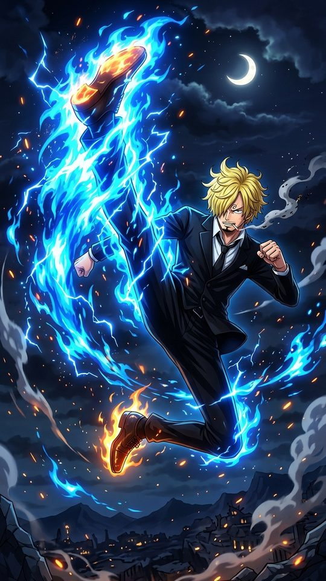
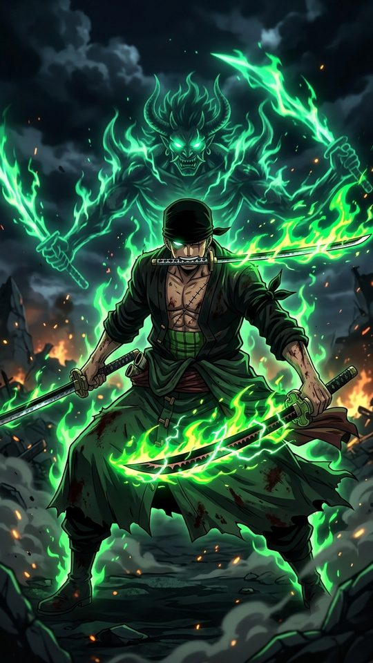
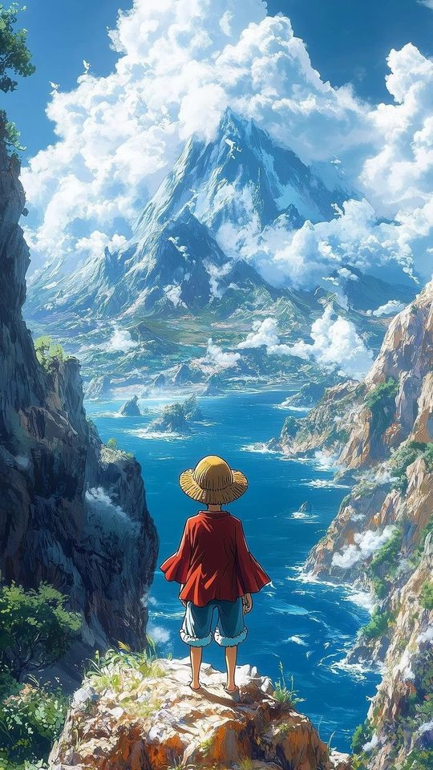
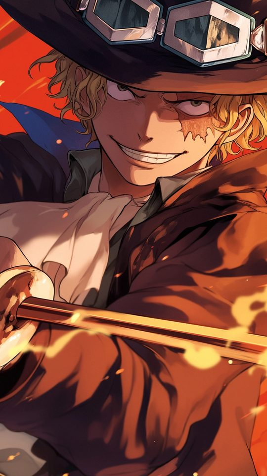

One Piece Wallpapers: Ranking the Straw Hats by Art Quality

One Piece has been running long enough that its artwork has passed through several distinct looks, and that range is exactly what makes it such a rich source of phone wallpapers. This guide ranks the main Straw Hats by how well their art works on a portrait phone screen, covering Luffy (including Gear 5), Zoro, Sanji, Nami, Robin and Brook. You will get specific notes on colour palettes, linework and cropping, so you can choose a background that still looks good once a clock, a widget and a row of icons are sitting on top of it.
Why One Piece wallpapers are harder than they look
Most One Piece art you will find online was never made to be a phone background. Key visuals, film posters and manga colour spreads are usually landscape, while a modern phone is a tall rectangle. When you drop a wide image onto a tall screen, something has to give: either the character shrinks into the middle with dead space above and below, or you crop in and lose whatever made the picture interesting.
The series also has more than one visual identity. Eiichiro Oda's manga colour spreads use flat, saturated blocks of colour with a strong black outline, while the anime has shifted palette over the decades. Early episodes are softer and slightly washed out; later arcs, and especially the Wano arc, lean into bolder, more graphic colour. Feature films have their own higher-budget key art. The practical shortcut is to think in terms of a character's signature colour, because almost every Straw Hat is built around one or two hues.

Luffy: the safest pick, and the Gear 5 question
Luffy is the default for a reason. His red vest, blue shorts and yellow straw hat with its red band give you three strong, well-separated colours that stay readable even at thumbnail size. His straw hat is probably the most recognisable silhouette in the series, so a tight crop that shows the brim, the hair and the eyes still reads instantly as One Piece.
Gear 5 changes the rules. The awakened form drops Luffy into a near-white palette: white hair, white clothing, ringed pupils and a looser, rubber-hose style of drawing with bouncier lines. On an OLED phone the white genuinely pops, but it can wash out a lock screen if your clock is also light. Place Gear 5 Luffy against a dark backdrop, such as a night sky, so the bright figure separates cleanly.

Zoro: green and black, built for dark themes
Zoro's palette is unusually narrow: moss green hair and coat, black and steel-grey clothing, the pale silver of his swords, and the small white of his bandana. A narrow palette is a real advantage for a wallpaper, because it means Zoro art almost never clashes with the colours of your app icons or notification badges. On a phone using a dark theme, a Zoro image set against charcoal or black keeps everything calm and readable.
The catch is his poses. Zoro is usually drawn in a wide, low stance with his three swords spread out horizontally, and that shape fights a portrait crop badly. Instead of forcing a full-body shot onto a tall screen, look for head-and-shoulders compositions or the Wano-era "King of Hell" silhouette, where the figure itself is tall and vertical. His Conqueror's Haki effect, black lightning threaded with red, also gives you a natural vertical element.
Sanji: warm tones and the clutter problem
Sanji brings warmth to a wallpaper. Blond hair over one eye, a black suit after the timeskip, and the gold, cream and flame-orange of his Diable Jambe attacks give you a cosy palette that sits comfortably behind a clock. The risk is clutter: Sanji is very often drawn mid-kick, surrounded by motion lines, smoke and fire, which fills the whole frame and leaves nowhere clean for a widget or a folder of icons.
For a phone, the better Sanji images are the quieter ones. A solo portrait, or the simpler pre-timeskip blue shirt and yellow-tie look, crops cleanly and keeps the composition readable.

Nami and Robin: two opposite problems
Nami and Robin sit at opposite ends of the same question. Nami's orange hair is bold, and her outfits change dramatically from arc to arc, from swimwear to the Wano kunoichi look to the Whole Cake Island wedding dress to her Egghead future outfit. That variety is fun, but her art tends to be colour-heavy and busy, which works for a bright home screen and works badly behind any text. If you use Nami, crop tight to her face and shoulders and let a single flat colour fill the rest of the screen.
Robin is the calmer choice. Her black hair and the darker purples, navies and deep reds she wears, especially in Wano, produce low-clutter compositions with genuine negative space. Her Demonio Fleur form, a dark, high-contrast silhouette, is one of the cleanest One Piece images you can put on a portrait screen, because the shape reads clearly even when icons overlap it.

Brook: the underrated portrait pick
Brook is the pick most people overlook. His palette is close to monochrome, bone white, black suit and top hat, usually with one vivid accent such as a purple or red lining. Because he is mostly black and white, Brook art adapts to both light and dark themes without clashing with your interface. More importantly, he is one of the few Straw Hats whose full-body pose is naturally tall and thin, which means his art fits a portrait frame instead of fighting it.
Comparing the Straw Hats at a glance
| Character | Signature palette | Best on a phone | Watch out for |
|---|---|---|---|
| Luffy | Red, blue, yellow | Any theme; tight hat-and-eyes crop | Gear 5 white washing out a light clock |
| Zoro | Green, black, steel | Dark themes | Wide horizontal sword poses |
| Sanji | Gold, cream, flame orange | Warm, low-clutter portraits | Busy mid-kick action frames |
| Nami | Orange plus many arc outfits | Bright, bold home screens | Clashing with icon colours |
| Robin | Purple, navy, deep red | Clean layouts with negative space | Very dark images on a bright theme |
| Brook | Black, white, one accent | Both light and dark themes | Full-colour concert shots get loud |
How to crop One Piece art for a phone
- Decide your target size first. A common modern phone screen is around 1080 by 2340 pixels, so aim for a ratio near 9:19.5 before you start.
- Keep the face in the upper third. The bottom half of a home screen is where icons and the dock live, so important detail placed there gets buried.
- When a source image is too narrow, do not stretch it. Fill the empty sides with a flat colour pulled from the character's own palette.
- Prefer dark backdrops for Gear 5 Luffy and for Brook, so bright figures stay separated from the clock.
- Avoid frames built around horizontal action lines. Cropped to portrait, they lose their sense of motion and just look like stray strokes.
Frequently asked questions
Which Straw Hat makes the cleanest phone wallpaper?
Brook and Robin are the easiest to live with, because both use restrained palettes and compositions with real negative space. Luffy is the most recognisable if you want a wallpaper that instantly reads as One Piece.
Is Gear 5 Luffy a good lock screen?
It can be, as long as you pick a dark background. The form's near-white palette looks striking on an OLED display, but on a light lock screen it competes with a white or pale clock.
Where should I place a character on a portrait wallpaper?
Aim to keep the head and eyes in the upper third of the screen and leave the lower area relatively simple, so the clock, widgets and app icons have somewhere to sit.
Do manga colour spreads work better than anime screenshots?
They solve different problems. Manga colour spreads tend to have flatter, more graphic colour and cleaner silhouettes, which crop well. Anime screenshots often have more detail but also more background clutter, so they usually need a tighter crop.
Related reading
If you like fantasy anime with real political weight, we reviewed As a Reincarnated Aristocrat, I'll Use My Appraisal Skill to Rise in the World season by season: Season 1, Season 2, Season 3 (airing now), or start with the complete S1-S3 guide.